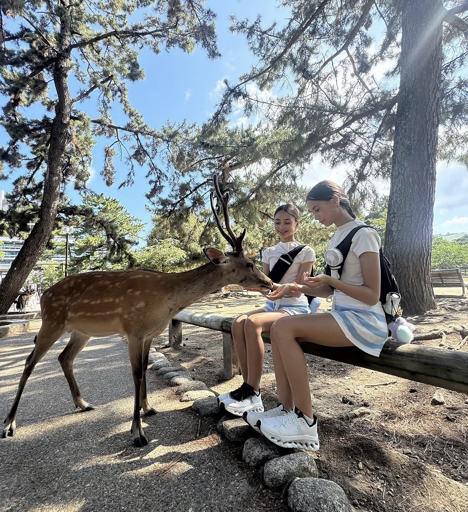

Pre-Derm Society is a student-led space for exploring dermatology, medicine, skincare, research, and healthcare.
Our interest in dermatology started when we were young. Watching our mom enjoy her work as a dermatologist and seeing how she helped others made us interested in the field too.
We actually started a dermatology club in middle school, and that interest has continued to grow. As we learned more about dermatology, we wanted to create a space where other students could explore it with us.
That is why we created Pre-Derm Society: to share our interest in dermatology, learn about medicine together, and encourage other students to discover what they might be interested in too.

We want to make dermatology, skincare science, healthcare, and medical education accessible and exciting for students.
Whether you're already interested in medicine or simply curious about how the skin works, Pre-Derm Society is a place to learn, ask questions, and discover something new.